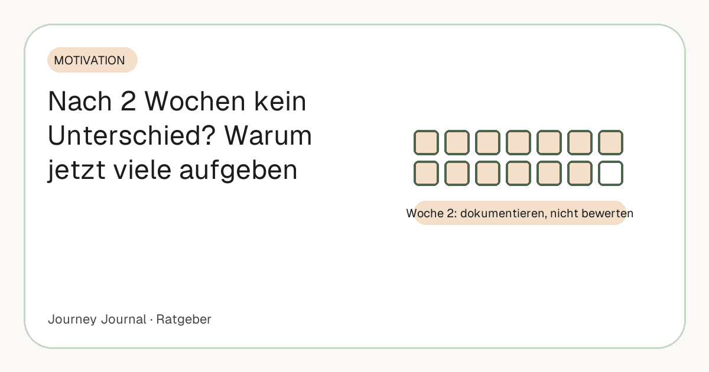

Ratgeber · Motivation · 5 Min. Lesezeit
Warum du nach 2 Wochen keinen Unterschied siehst – und warum genau jetzt die meisten aufgeben
Die gefährlichste Phase jeder Transformation ist Woche zwei. Die Motivation vom Start ist verbraucht, der Spiegel zeigt nichts, die Waage macht, was sie will. Genau hier brechen die meisten ab – obwohl körperlich längst etwas passiert. Dieser Artikel geht nicht die Zeitleiste durch (die steht hier, Woche 1 bis 12), sondern erklärt, warum Woche zwei so schwer ist und was in dieser Phase konkret hilft.

Teil unseres Guides: Progress-Fotos: Der komplette Guide – Aufnahme, Rhythmus, Vergleich, Speicherung
Kurz gesagt
- In Woche 2 ist nichts sichtbar – und das ist normal. Erste Unterschiede auf vergleichbaren Fotos brauchen etwa drei bis vier Wochen.
- Der Körper arbeitet trotzdem: Wasser, Glykogen, Schlaf und Energie ändern sich zuerst, Fett folgt in Wochen.
- Der Spiegel täuscht systematisch, weil das Gehirn ein Bild, das es täglich sieht, laufend angleicht.
- Die Waage ist kein Tagesinstrument. Nur der Wochentrend zählt, der Einzelwert ist Wasser.
- Strategie für Woche 2: dokumentieren statt bewerten, Vergleichstermin in Woche 4 im Kalender, kein Blick zurück vorher.
Warum Woche 2 schwerer ist als Woche 1
Woche eins trägt sich selbst. Der Entschluss ist frisch, die Umstellung fühlt sich nach Handeln an, und die Waage belohnt mit einem steilen Abfall – der allerdings fast nur aus Wasser besteht, das mit den Glykogenspeichern geht. In Woche zwei fehlt beides: Die Neuheit ist weg, und die Waage bremst, weil der Wassereffekt vorbei ist und der eigentliche Fettabbau mit seinem langsamen Tempo übernimmt.
Das ist der Moment, in dem Erwartung und Realität am weitesten auseinanderliegen. Die Erwartung war das Tempo von Woche eins; die Realität ist ein halbes bis ein Kilo pro Woche – das Tempo, das Gesundheitsbehörden wie der britische NHS als sicher und haltbar empfehlen. Wer Woche eins als Maßstab nimmt, erlebt Woche zwei zwangsläufig als Scheitern.
Was in Woche 1–2 wirklich passiert
Der Körper reagiert zuerst innen. Glykogenspeicher leeren sich, Wassereinlagerungen verschieben sich, die Verdauung stellt sich um. Viele schlafen besser, haben am Nachmittag mehr Energie, der Hosenbund fühlt sich minimal anders an. Nichts davon siehst du im Spiegel – aber alles davon ist Fortschritt und ein Zeichen, dass die Umstellung greift.
Fett dagegen geht langsam. Bei einem Defizit, das 0,5 bis 1 Kilo pro Woche ergibt, sind nach zwei Wochen ein bis zwei Kilo Fett weg – verteilt über den ganzen Körper. Das ist auf keinem Foto und in keinem Spiegel zu erkennen, und es wäre auch bei perfekter Umsetzung nicht zu erkennen. Wer in Woche zwei nichts sieht, macht nichts falsch. Er ist genau im Plan.
Warum der Spiegel dich täuscht
Du siehst dich jeden Tag. Das Gehirn gleicht das Bild ständig an – Veränderung in kleinen Schritten wird schlicht nicht registriert. Deshalb erschrecken Menschen beim Blick auf ein Foto von vor drei Monaten, obwohl sie täglich in den Spiegel gesehen haben. Der Spiegel ist kein Messinstrument, sondern eine Gewohnheit.
Wie hoch die Schwelle ist, bevor andere etwas sehen, haben Re und Rule (2016) für das Gesicht gemessen: Ein Unterschied wird ab etwa 1,3 BMI-Punkten wahrgenommen – bei 1,75 m Körpergröße rund vier Kilo. Bei einem gesunden Tempo ist diese Marke frühestens in Woche vier bis acht erreicht. Für Woche zwei heißt das: Es ist physikalisch noch nichts da, was ein Spiegel zeigen könnte.
Die Waage ist kein Tagesinstrument
Ein bis zwei Kilo Schwankung pro Tag sind normal: Salz, Kohlenhydrate, Verdauung, Training, Zyklus. In Woche zwei wird das zur Falle, weil der Wassereffekt der ersten Woche gerade endet und einzelne Morgen sogar höher liegen als drei Tage zuvor. Wer das als Rückschritt liest, hat die Waage falsch verstanden – die sechs Ursachen der Tagesschwankung erklärt ein eigener Artikel.
Die Übersichtsarbeit von Zheng und Kollegen (2015) kommt zu dem Schluss, dass regelmäßiges Wiegen mit besseren Ergebnissen verbunden ist und keine negativen psychischen Folgen zeigte. Die Bedingung steckt im Wort „regelmäßig“: Wer täglich wiegt, sollte nur den Wochendurchschnitt betrachten – nie den Einzelwert.
Die 3-4-Wochen-Regel
Erste sichtbare Unterschiede auf vergleichbaren Fotos brauchen bei 0,5 bis 1 Kilo pro Woche etwa drei bis vier Wochen, deutlich sichtbare sechs bis acht. Plan das ein – wörtlich: Trag den ersten Vergleichstermin für Woche vier in den Kalender ein und vergleiche vorher nicht. Nicht heimlich, nicht „nur mal kurz“. Jeder Vergleich vor Woche vier zeigt Rauschen, und Rauschen demotiviert.
Dass der Vergleich in Woche vier überhaupt etwas zeigt, hängt an einer Bedingung: Die Fotos müssen unter gleichen Umständen entstanden sein – Licht, Abstand, Kleidung, Winkel. Die sieben Regeln dafür sind schnell umgesetzt, aber nicht nachholbar: Ein unvergleichbares Startfoto bleibt unvergleichbar.
Was du stattdessen in Woche 2 tun kannst
Dokumentieren statt bewerten. Das tägliche Foto und das tägliche Wiegen laufen weiter, aber ohne Urteil – sie sind Material für später, nicht Feedback für heute. Burke und Kollegen (2011) zeigen in ihrer Übersicht, dass Selbstbeobachtung mit größerem Gewichtsverlust verbunden ist; der Wert entsteht durch das Festhalten, nicht durch das Bewerten.
Ein kurzes Video-Statement – „Wie fühle ich mich heute?“ – ist in dieser Phase das wichtigste Werkzeug, weil es genau das festhält, was in Woche zwei schon da ist: besserer Schlaf, mehr Energie, ein anderes Gefühl in der Kleidung. Es funktioniert auch an Tagen, an denen du kein Foto von dir willst, und nach einem Jahr ist es wertvoller als jedes Bild. Wie ein Video-Tagebuch funktioniert, steht in einem eigenen Artikel.
Und: Nimm dir die Entscheidung ab. In Woche zwei wird jeder Tag neu verhandelt – ob es sich lohnt, ob es funktioniert, ob man weitermacht. Ein fester Termin in Woche vier beendet diese Verhandlung: Bis dahin wird nicht entschieden, sondern nur dokumentiert.
Wenn Woche 2 vorbei ist
Woche drei ist leichter, weil der Rhythmus trägt. Woche vier bringt den ersten ehrlichen Vergleich, und der ist bei sauberen Fotos fast immer eine Überraschung – nicht spektakulär, aber sichtbar: ein Gesicht, eine Taille, eine Haltung. Von da an läuft die Dokumentation von Vergleich zu Vergleich, und die Zeitleiste bis Woche 12 zeigt, was wann zu erwarten ist.
Häufige Fragen
Ist es normal, nach zwei Wochen Diät nichts zu sehen?
Ja. Bei einem gesunden Tempo sind nach zwei Wochen ein bis zwei Kilo Fett weg, verteilt über den ganzen Körper – das ist weder im Spiegel noch auf Fotos erkennbar.
Wann sehe ich die ersten Erfolge beim Abnehmen?
Auf vergleichbaren Fotos meist nach drei bis vier Wochen, im Alltag (Kleidung, Energie, Schlaf) oft früher. Auf der Waage nur als Wochentrend, nie als Tageswert.
Warum zeigt die Waage in Woche 2 mehr als in Woche 1?
Weil der Wasserverlust der ersten Woche vorbei ist und Tagesschwankungen durch Salz, Kohlenhydrate und Verdauung wieder sichtbar werden. Das ist kein Rückschritt.
Ist es schlimm, wenn ich mich täglich wiege?
Nicht, wenn du den Wochendurchschnitt betrachtest. Der einzelne Tageswert sagt wenig aus.
Was hilft gegen den Motivationsverlust in Woche 2?
Dokumentieren statt bewerten, ein kurzes tägliches Video-Statement und ein fester Vergleichstermin in Woche vier – bis dahin wird nicht entschieden, nur festgehalten.
Quellen
- NHS: Losing weight – Getting started (12-week plan) – Empfohlenes Tempo 0,5–1 kg pro Woche
- Re D. E., Rule N. O. (2016): Heavy Matters. Social Psychological and Personality Science 7(1) – Wahrnehmungsschwelle sichtbarer Veränderung im Gesicht: etwa 1,3 BMI-Punkte
- Zheng Y. et al. (2015): Self-weighing in weight management: A systematic literature review. Obesity 23(2) – Regelmäßiges Wiegen, Wochentrend, keine psychischen Nachteile
- Burke L. E., Wang J., Sevick M. A. (2011): Self-monitoring in weight loss: a systematic review. J Am Diet Assoc 111(1) – Selbstbeobachtung ist mit größerem Gewichtsverlust verbunden
Dieser Artikel ersetzt keine ärztliche Beratung. Bei einer größeren Gewichtsreduktion ist eine medizinische Begleitung sinnvoll.